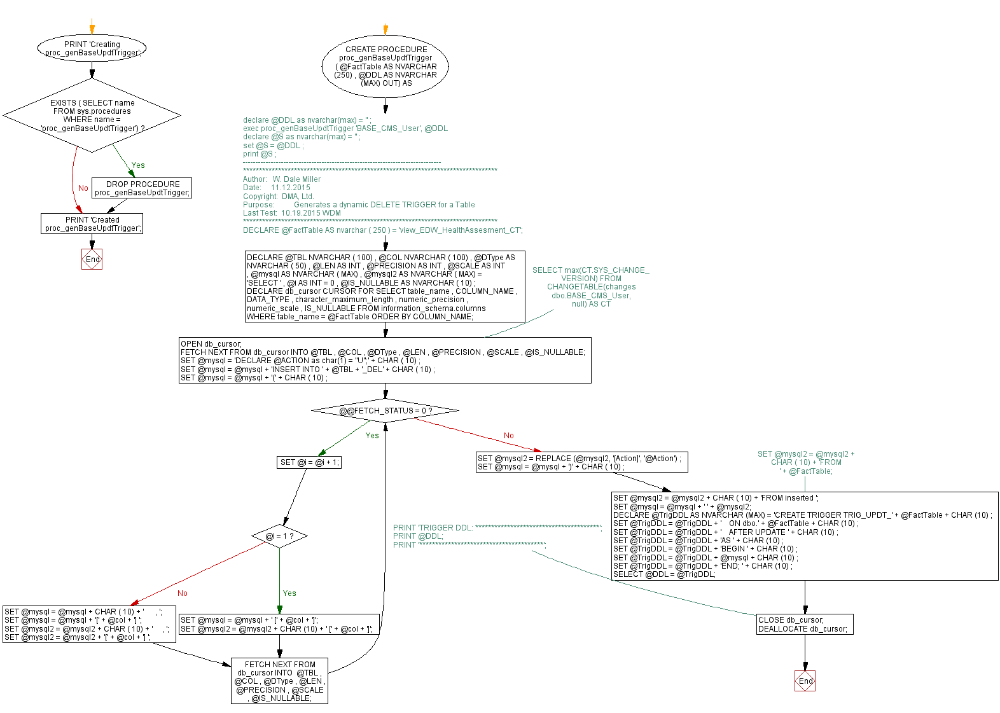

<a href="proc_genBaseUpdtTrigger.png"></a>
GO PRINT 'Creating proc_genBaseUpdtTrigger'; GO IF EXISTS ( SELECT name FROM sys.procedures WHERE name = 'proc_genBaseUpdtTrigger') BEGIN DROP PROCEDURE proc_genBaseUpdtTrigger; END; GO /* declare @DDL as nvarchar(max) = '' ; exec proc_genBaseUpdtTrigger 'BASE_CMS_User', @DDL declare @S as nvarchar(max) = '' ; set @S = @DDL ; print @S ; */ CREATE PROCEDURE proc_genBaseUpdtTrigger ( @FactTable AS NVARCHAR (250) , @DDL AS NVARCHAR (MAX) OUT) AS BEGIN /*------------------------------------------------------------------------------ ******************************************************************************** Author: W. Dale Miller Date: 11.12.2015 Copyright: DMA, Ltd. Purpose: Generates a dynamic DELETE TRIGGER for a Table Last Test: 10.19.2015 WDM ******************************************************************************** */ -- DECLARE @FactTable AS nvarchar ( 250 ) = 'view_EDW_HealthAssesment_CT'; DECLARE @TBL NVARCHAR ( 100) , @COL NVARCHAR ( 100) , @DType AS NVARCHAR ( 50) , @LEN AS INT , @PRECISION AS INT , @SCALE AS INT , @mysql AS NVARCHAR ( MAX) , @mysql2 AS NVARCHAR ( MAX) = 'SELECT ' , @i AS INT = 0 , @IS_NULLABLE AS NVARCHAR ( 10) ; DECLARE db_cursor CURSOR FOR SELECT table_name , COLUMN_NAME , DATA_TYPE , character_maximum_length , numeric_precision , numeric_scale , IS_NULLABLE FROM information_schema.columns WHERE table_name = @FactTable ORDER BY COLUMN_NAME; --SELECT max(CT.SYS_CHANGE_VERSION) FROM CHANGETABLE(changes dbo.BASE_CMS_User, null) AS CT OPEN db_cursor; FETCH NEXT FROM db_cursor INTO @TBL , @COL , @DType , @LEN , @PRECISION , @SCALE , @IS_NULLABLE; SET @mysql = 'DECLARE @ACTION as char(1) = ''U'';' + CHAR ( 10) ; SET @mysql = @mysql + 'INSERT INTO ' + @TBL + '_DEL' + CHAR ( 10) ; SET @mysql = @mysql + '(' + CHAR ( 10) ; WHILE @@FETCH_STATUS = 0 BEGIN SET @i = @i + 1; IF @i = 1 BEGIN SET @mysql = @mysql + ' [' + @col + ']'; SET @mysql2 = @mysql2 + CHAR (10) + ' [' + @col + ']'; END; ELSE BEGIN SET @mysql = @mysql + CHAR ( 10) + ' , '; SET @mysql = @mysql + '[' + @col + '] '; SET @mysql2 = @mysql2 + CHAR ( 10) + ' , '; SET @mysql2 = @mysql2 + '[' + @col + '] '; END; FETCH NEXT FROM db_cursor INTO @TBL , @COL , @DType , @LEN , @PRECISION , @SCALE , @IS_NULLABLE; END; SET @mysql2 = REPLACE (@mysql2, '[Action]', '@Action') ; SET @mysql = @mysql + ')' + CHAR ( 10) ; --SET @mysql2 = @mysql2 + CHAR ( 10) + 'FROM ' + @FactTable; SET @mysql2 = @mysql2 + CHAR ( 10) + 'FROM inserted '; SET @mysql = @mysql + ' ' + @mysql2; DECLARE @TrigDDL AS NVARCHAR (MAX) = 'CREATE TRIGGER TRIG_UPDT_' + @FactTable + CHAR (10) ; SET @TrigDDL = @TrigDDL + ' ON dbo.' + @FactTable + CHAR (10) ; SET @TrigDDL = @TrigDDL + ' AFTER UPDATE ' + CHAR (10) ; SET @TrigDDL = @TrigDDL + 'AS ' + CHAR (10) ; SET @TrigDDL = @TrigDDL + 'BEGIN ' + CHAR (10) ; SET @TrigDDL = @TrigDDL + @mysql + CHAR (10) ; SET @TrigDDL = @TrigDDL + 'END; ' + CHAR (10) ; SELECT @DDL = @TrigDDL; --PRINT 'TRIGGER DDL: ***************************************'; --PRINT @DDL; --PRINT '***************************************'; CLOSE db_cursor; DEALLOCATE db_cursor; END; GO PRINT 'Created proc_genBaseUpdtTrigger'; GO
Hide code
Visustin flow chart for T-SQL